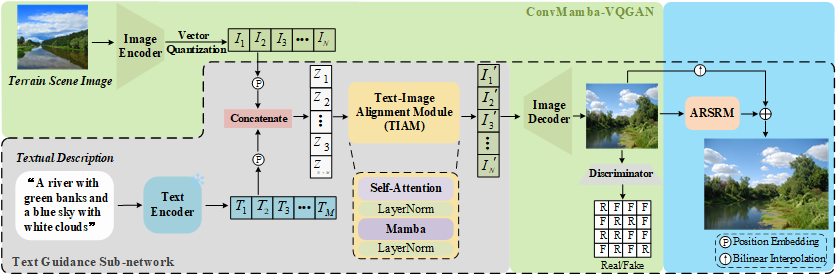

Single Target Tracking with Contextual Prompts in Scene Understanding
|  |
The architecture of the proposed TG-TSGNet.
Abstract
With the increasing demand for terrain visualization in many fields, such as augmented reality, virtual reality and geographic mapping, traditional terrain scene modeling methods encounter great challenges in processing efficiency, content realism and semantic consistency. To address these challenges, we propose a Text-Guided Arbitrary-Resolution Terrain Scene Generation Network (TG-TSGNet), which contains a ConvMamba-VQGAN, a Text Guidance Sub-network and an Arbitrary-Resolution Image Super-Resolution Module (ARSRM). The ConvMamba-VQGAN is built on top of the Conv-Based Local Representation Block (CLRB) and the Mamba-Based Global Representation Block (MGRB) that we design, to utilize local and global features. Furthermore, the Text Guidance Sub-network comprises a text encoder and a Text-Image Alignment Module (TIAM) for the sake of incorporating textual semantics into image representation. In addition, the ARSRM can be trained together with the ConvMamba-VQGAN, to perform the task of image super-resolution. To fulfill the text-guided terrain scene generation task, we derive a set of textual descriptions for the 36,672 images across the 38 categories of the Natural Terrain Scene Data Set (NTSD). These descriptions can be used to train and test the TG-TSGNet\footnote{The data set, model and source code are available at https://github.com/INDTLab/TG-TSGNet.}. Experimental results show that the TG-TSGNet outperforms, or at least performs comparably to, the baseline methods in image realism and semantic consistency with proper efficiency. We believe that the promising performance should be due to the ability of the TG-TSGNet not only to capture both the local and global characteristics and the semantics of terrain scenes, but also to reduce the computational cost of image generation.
Links

Experimental Results

|

|
Comparison of the inference times used by five models for generating images at varying resolutions.

|
| |
Comparison of the images generated using seven baselines and our method in terms of a given textual description.